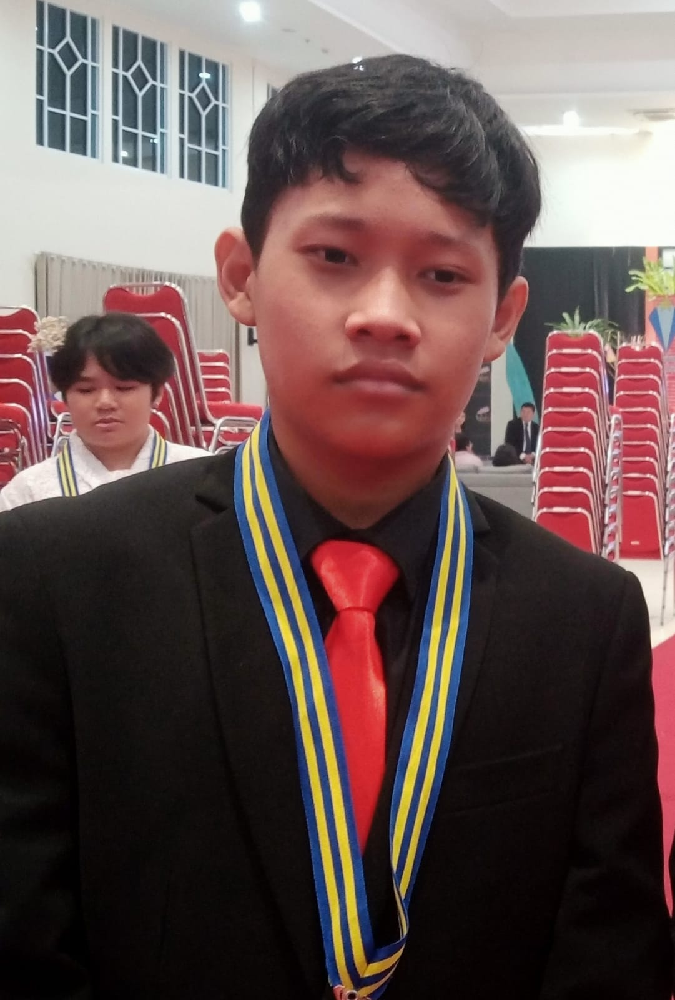
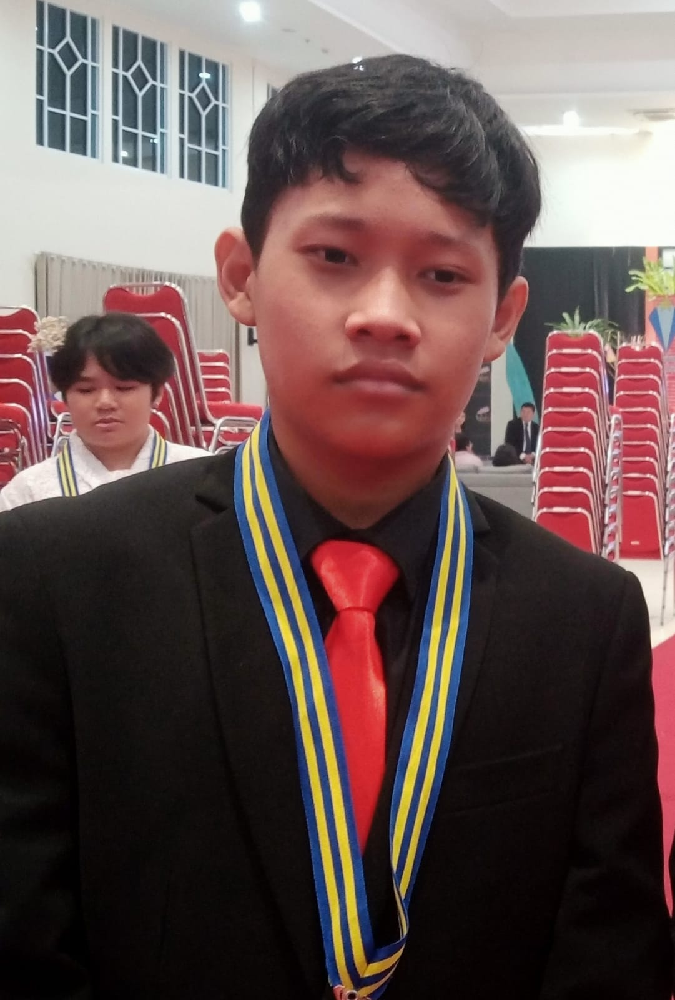

Anggota
Calysta Ellysia Anthony/X-5/05
Berdiskusi tema website, membantu dalam konsep dan design website,berliterasi,
menulis bagian pendahuluan, bagian peran & tanggung jawab sebagai pelajar
Indonesia, tips dalam pendidikan Indonesia, menuliskan peraturan pada pendidikan
yang didasari UUD, berliterasi asal-usul pendidikan diIndonesia serta tokoh-tokoh
pendahulu yang berperan penting dalam perkembangan pendidikan di Indonesia hingga
saat ini, dan sebagai koordinator kelompok.
Karel Arsenio Pranadipta Nugraha/X-5/19
membuat quiz dan mencari tujuan Pendidikan untuk kehidupan berkelanjutan.
Quiz yang dibuat berisi pertanyaan dari website berjudul "Membangun Bangsa
Melalui Pendidikan yang Berkarakter", bagi yang ingin mencoba pertanyaan quiz
dapat melihat jawaban di website dengan mudah. Saya juga menulis dan mencari
tujuan Pendidikan untuk hidup berkelanjutan dalam website untuk memberi pemahaman bagi para pembaca.
Paskalis Brahmantyo/X-5/27
Membuat seluruh halaman di website dan membuat disain
seluruh halaman serta menulis code di seluruh
halaman website
” Menjadi Pemimpin yang Peduli, Kreatif dan Berwawasan Global “
 
